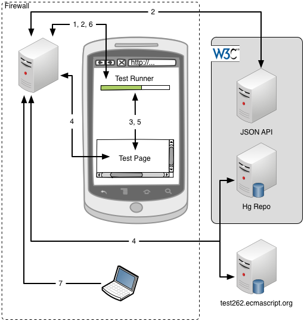

Development of this document happens on GitHub. Please file well-scoped issues and send pull requests directly on GitHub. Please send comments to the mailing list as described below.
This document describes the testing plan for providing a test suite for the Coremob specification.
Introduction
------------
As per it's [charter](http://www.w3.org/community/coremob/charter/), the Coremob CG is due to produce test suites for the specifications it publishes. Because Coremob specs do not create new technology but instead curates existing ones, the role of the CG is limited, in theory at least, to finding pre-existing test suites for each of the specifications it references and developing software which enables to run them all together. In practice however, many of the referenced specifications don't have proper test suites yet and CG participants will either have to contribute tests themselves or enable the broader Web developer community to do so, notably via efforts like [Test the Web Forward](http://testthewebforward.org/).
This document will therefore endeavor to look at these two aspects--the test runner and the actual test themselves--and provide guidance to the CG on how to best move forward.
Terminology
-----------
Testing _outside_ of the browser predates testing _within_ the browser by a number of years. Consequently, the architecture and terminology of testing wasn't really designed with the Web in mind. While Web pages provide a simple way to run tests in a clean environment, they also introduce a significant layer of technological complexity (they're asynchronous, and opaque to the test runner until loaded). They also really muddle concepts. Whereas in a standard programming environment the relationship between test and test suites are straightforward, on the Web, a test suite can be either a collection of pages or a collection of tests depending on who you're talking to. Similarly, test runners are exist both at the page level, where they iterate over tests (or sometimes, groups of tests), and at the top level, where they iterate over pages (or, you've guessed it, groups of pages).
For the purpose of this document, the following terminology will be used.
A test runner is a program which is able to run multiple, potentially nested test suites and collect the results of running these suites for display through a UI or further processing. It is composed of a client-side component written in JavaScript and of an optional server-side component.
A test suite consists of a collection of test pages or of other, nested test suites.
A test page is a single HTML document and, optionally, additional resources such as images or CSS files. Test pages contain one or more tests. They also reference a test framework which auto-runs the test on page load.
A test is a single JavaScript function. Its role is to setup the test environment, run a number of assertions, report the result of running those assertions to a test framework, and tear down its environment. Tests can be synchronous or asynchronous depending on the needs.
An assertion is the smallest building block of testing. It allows to verify predetermined conditions are met and throws an exception when that is not the case.
A test framework is a JavaScript program which is in charge of running the tests found on a _single_ test page and reporting the results of running these tests to the test runner.
testharness.js is the W3C's test framework of choice. The source code can be found on [GitHub](https://github.com/jgraham/testharness.js/) and [excellent documentation](http://darobin.github.com/test-harness-tutorial/docs/using-testharness.html) is available.
A test framework shim is a JavaScript program that enables tests written using a different test framework than testharness.js to run and report their results to the test runner.
The W3C test server is a web server that is fully dedicated to testing. It hosts the W3C Test Suite Framework. Its URL is [http://w3c-test.org](http://w3c-test.org).
The W3C Test Suite Framework is the combination of all test suites written by W3C groups and versioned in a Mercurial repository stored on the W3C test server, the JSON API, testharness.js and code which allows to run the test suites and store their results in a database.
The W3C Test Suite Framework JSON API's essential role is to smooth out the somewhat chaotic organization of the W3C test server by providing a unified API to find the test suite that corresponds to each specification. It also enables posting the test results back to the W3C database. The API is [fully documented](http://w3c-test.org/framework/docs/api/).
Requirements
------------
This section concentrates on defining the requirement and potential solutions to the test runner.
We have two sets of requirements. Those stated in Coremob CG's [charter](http://www.w3.org/community/coremob/charter/) which are must-haves and those expressed during the F2F meetings which are nice-to-haves.
### Must-haves ###
> The CG will compile accompanying test suites for each specification it releases. Where appropriate, the test suites will draw on pre-existing tests developed for the feature’s original specification. Otherwise, CG participants will endeavor to fill in the gaps. Since test case development may drive normative changes or clarifications into the original specifications, any new tests will be contributed back to the appropriate W3C (or non-W3C) group by their original author.
With that in mind the CG has a single requirement to produce a test suite to accompany the Coremob 2012 specification.
The CG MUST produce a test suite for [[COREMOB-2012]].
The CG MUST produce a test framework that can run testharness.js based tests.
### Nice-to-Haves ###
The CG MAY produce shims that allow non-W3C tests to be run and their results collected.
The CG MAY produce a test framework that enables running W3C tests across different origins.
The CG MAY produce a test framework that's able to run on a non public network.
Tests
-----
- Look at the existing W3C test suites and assess the test coverage of specs referenced by [[COREMOB-2012]].
- Identify the gaps and prioritize them.
- Involve developers to help close the gap where it matters most, notably by piggybacking on [Test the Web Forward](http://testthewebforward.org/) and similar efforts.
- Identify existing test suites outside of W3C specifications (notably for HTTP and ECMAScript).
- Assess their coverage.
- Assess compatibility of their test framework with the different test runner options we are considering.
Structure of the Test Runner
----------------------------
We propose four solutions of increasing complexity.
### Host the test runner directly on the W3C test server ###
1. The test device navigates to the W3C test server which responds with the test runner.
2. The test runner queries the W3C JSON API to obtain the URLs of the test pages it wants to run.
3. The runner then sequentially passes the URL of each test page to the iframe.
4. Each test page and its resources is fetched from the W3C test server and loaded into the iframe. This auto-runs the test framework.
5. Once it has finished running the test page, the test framework updates the test runner.
6. When all test pages have been run, the test runner transfers the results to browserscope.org and the W3C test server (via its JSON API).
7. The results are publicly available on browserscope.org and the W3C test server.
#### Pros ####
- This solution satisfies all of our Must-have requirements.
- It is fast and simple to build as it consists of a simple client-side runner.
- There are no known issues.
- implies
#### Cons ####
- This solution does not satisfy most of our Nice-to-Have requirements.
- Including tests for non W3C specification implies adding them directly to the W3C repository.
### Host the test runner on coremob.org but run the tests from the W3C test server ###
1. The test device navigates to coremob.org which responds with the test runner.
2. The test runner queries the W3C JSON API using JSON-P to obtain the URLs of the test pages it wants to run.
3. The runner then sequentially passes the URL of each test page to the iframe.
4. In turn each test page is fetched along with its resources from the W3C test server and loaded into the iframe. Other, non W3C test pages can also be run in the same way, provided the test framework used is compatible with the runner, or can be made compatible via a shim. For example, [test262](http://test262.ecmascript.org/), the conformance test suite for [[ECMA-262-51]], would be run that way.
5. Once it has finished running the test page, the test framework updates the test runner through the [[POSTMSG]] API.
This step requires some changes to the W3C Test Suite Framework and/or to testharness.js itself in order to enable cross-origin communication. Given the [wide support](http://caniuse.com/#feat=x-doc-messaging) for [[POSTMSG]] it seems like a reasonable request to make. It also seems W3C could avoid having to whitelist third party runners because the test page hosted on the W3C test server would only emit test results and would not receive any messages.
6. When all test pages have been run, the test runner transfers the results to browserscope.org and the W3C test server (via its JSON API).
7. The results are publicly available on browserscope.org and the W3C test server.
#### Pros ####
- Satisfies all of our Must-have requirements and some of our Nice-to-Have ones too.
- Relatively easy to implement.
- Could enable pulling running tests on other domains in a breeze, provided they sent test results using [[POSTMSG]] and we agreed on a format for test results, e.g. [TAP](http://testanything.org/wiki/index.php/Main_Page).
#### Cons ####
- requires modification of W3C code to enable cross-origin communication.
- doesn't enable testing of unreleased devices on closed networks.
### Host the test runner on coremob.org or locally, proxy all requests through it ###
There a number of alternative scenarios here depending on whether we prefer more code to run on the client or on the server. The basic idea stays the same, however: the URLs of the test pages are fetched through the JSON API and their content (and resources) proxied through a server-side component. This avoids same origin policy constraints and also allows running the test suite inside of a closed network.
Below are two example architecture for this. The first example targets the current use case we have with Coremob, that is, being able to host a publicly accessible test suite, run it and collect the results on browserscope.org or elsewhere. The second example caters for the needs of device manufactures or carriers, which want to test unreleased devices on a closed network.
#### Example architecture of a publicly runnable implementation ####
1. The test device navigates to coremob.org which responds with the test runner.
2. The runner queries the W3C JSON API using JSON-P to obtain the URLs of the test pages it wants to run. Note this could also be done by a server-side component.
3. The runner then sequentially passes the URL of each test page as a query parameter of the iframe.
4. Instead of being fetched directly from the W3C test server, each test page along with its resources is instead proxied through coremob.org. Other, non W3C test pages could also be similarly proxied and run.
5. Once it has finished running the proxied test page, the test framework updates the test runner.
6. Once all test pages have been run, the test runner transfers the results to browserscope.org and the W3C test server (via its JSON API).
7. The results are publicly available on browserscope.org and W3C test server.
#### Example architecture for an implementation hosted on a closed network ####

1. The test device navigates to a local server within the closed network.
2. This local server queries the W3C JSON API and obtain the URLs of the test pages it wants to run.
3. The local server responds to the test device with the test runner and the URLs of the proxied test pages it wants to run.
4. The runner then sequentially passes the URL of each proxied test page the iframe.
5. Instead of being fetched directly from the W3C test server, each test page along with its resources is instead proxied through the local server. Other, non W3C test pages could also be similarly proxied and run.
6. Once it has finished running the proxied test page, the test framework updates the test runner.
7. When all test pages have been run, the test runner transfers the results back to the local server.
8. The results are only available locally.
#### Pros ####
- satisfies all of our Must-have requirements
#### Cons ####
- Some uncertainty as to how that can be done given the SOP problem
- does not satisfy all of our Nice-to-Have requirements.
### Build a custom solution ###
This option completely forgoes the W3C JSON API and goes directly for the W3C's repository. While this greatly simplifies the design, it puts the burden of understanding the structure of the W3C repository and keeping up with changes on us.
Other test repositories can be treated similarly.
1. The test repositories are copied to coremob.org on a regular basis (maybe via a cron job).
2. When test device navigates to coremob.org it responds with the test runner and the URLs of the test pages it wants to run.
3. The runner sequentially passes the URL of each test page to the iframe.
4. The test pages and their resources are fetched directly from the locally cloned repository on coremob.org.
5. Once it has finished running the test page, the test framework updates the test runner.
6. When all test pages have been run, the test runner transfers the results to browserscope.org or elsewhere.
7. The results are publicly available on browserscope.org or can be kept private if required.
#### Pros ####
- satisfies all requirements
#### Cons ####
- Not relying on the JSON API exposes us to maintenance costs.
Conclusion
----------
To decide between the different solutions. it depends on resources available and motivation of W3C to provide (and maintain) certain features into their API.
1. liaise with W3C about the different requirements we have for the JSON API:
* support for cross-origin messages,
* support listing of test page sub-resources.
2. Determine test coverage of W3C specs. Create a doc about this. Liaise with W3C.
3. Determine test coverage, licensing terms, and runner compat of non W3C specs. Notably test262.
4. define CG participant resources to build runner.